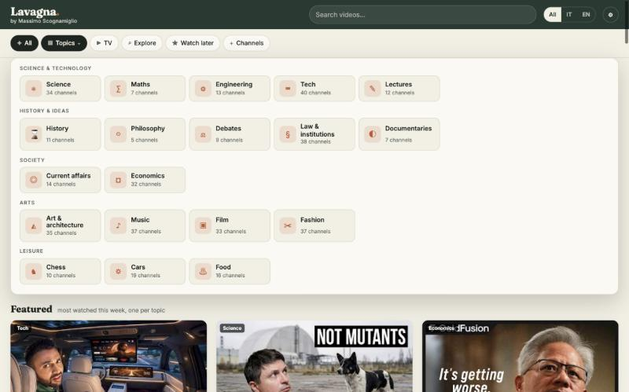
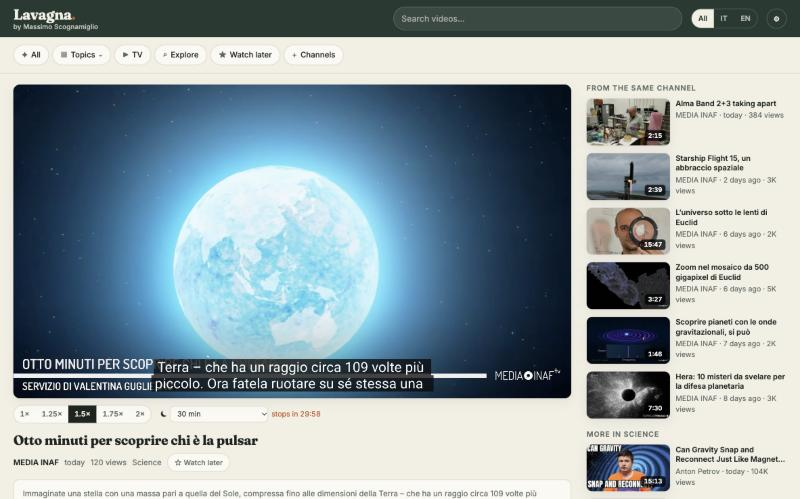
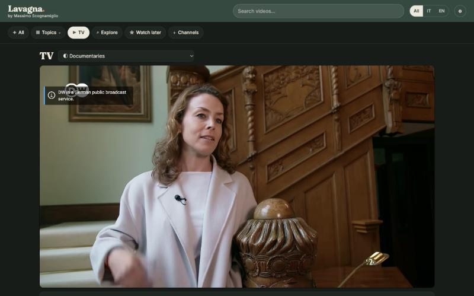

Curated, not recommended
Every channel is chosen by a person and checked: still active, real long-form videos, a real audience. Clickbait farms don't get in.
No ads on the page. No Shorts.
Lavagna itself shows zero ads and does zero tracking. Shorts never show up. Videos play in YouTube's own player, which may show its ads — they disappear with YouTube Premium.
No algorithm
No endless feed nudging you somewhere worse. You browse topics like the shelves of a good library.
Small, calm, and surprisingly capable
Everything you'd want from a video site for learning, and nothing you wouldn't.



Search by meaning
The next feature to be released. Search for an idea, not just a word: Lavagna will find the videos that explain it even when they use different words — or a different language. It's learning the whole library right now, a few dozen videos at a time.
Free, open, and cheap to run
Lavagna is open source under the MIT licence. Use it, copy it, change it — or build your own curated video library.
Watch something good tonight.
No account needed, nothing to install.
Open Lavagna →